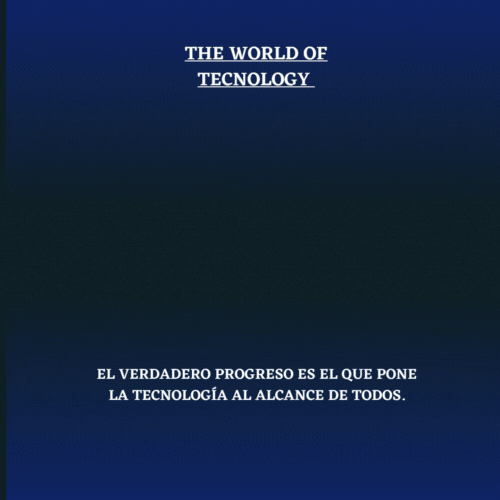

<html><!DOCTYPE html>
<html lang="en">
<head>
    <meta charset="UTF-8">
    <meta http-equiv="X-UA-Compatible" content="IE=edge">
    <meta name="viewport" content="width=device-width, initial-scale=1.0">
    <title>The World of technology</title>
</head>
<body>
    
</body>
</html>
<head>
<title> The world of tecnology </title>
<h1 align="center">THE WORLD OF TECNOLOGY</h1>
<p style="text-align:center">

</head>
</p> 
<center>   
<body BACKGROUND="imagen.gif" text="#FFFFFF" ALING="right">
  
<p> Bienvenidos, a the world of tecnology compañia con base tecnologíca
que lleva a cabo su actividad basandose fuertemente en la aplicación de avances
científicos o tecnológicos para generar nuevos productos o servicios </p>

<p><i>La empresa tecnológica es importante porque no solo potencia el tejido empresarial de este sector, sino también porque promueve el desarrollo económico del país. Las empresas de tecnología pueden ser de muy distintos tipos y tamaños. Sin embargo, todas se aseguran de proporcionar un determinado servicio o producto a sus consumidores.

    Además, favorece el empleo de alta cualificación, lo que proporciona un valor añadido muy importante al entorno industrial.
    
    Son muchos casos de empresas los que han nacido de los laboratorios de universidades y organismos públicos. Estos son los llamados, empresas que</i></p>

    <p><i>Las empresas relacionadas con la tecnología han ido en aumento durante las últimas décadas. De hecho, hay más de 2 millones de puestos de trabajo disponibles tan solo en los Estados Unidos. Una buena parte de ellos están relacionados con la tecnología y la programación informática. La empresa tecnológica ofrece una variedad de servicios que incluyen plataformas de redes sociales, plataformas de compras en línea, computación en la nube y más. La tecnología tiene un impacto significativo en nuestras vidas hoy: es la forma en que nos comunicamos.

        Uno de los servicios más importantes que ofrece la empresa tecnológica es la Internet y tecnologias. Se estima que 2000 millones de personas utilizan Internet para diversas necesidades. Además, alrededor de 3.000 millones de personas en todo el mundo utilizan teléfonos móviles, lo que antes era inaudito para los países en desarrollo. Esto ha llevado a un crecimiento exponencial de la tecnología de la información y la innovación en todas las industrias.
        
        Además, brindan otras muchas comodidades, como servicios de transporte que facilitan la vida a todos, desde profesionales ocupados hasta padres que intentan hacer malabarismos con sus horarios y la crianza de hijos.
        
        En general, podemos decir que las empresas tecnológicas hacen un gran trabajo para adaptar la innovación al día a día.</i></p>

        <p><i>Las tecnología ya no es sinónimo de hardware -s, como hemos dicho, Pero como lo digital está cada vez más presente en el entorno empresarial, nunca ha sido tan difícil abrirse paso entre el ruido y distinguir una empresa tecnológica pura y dura de las que, simplemente, la utilizan.

            Ser una compañia y organizacion de con base tecnológica consiste en tener un equipo cualificado interno y que cada miembro de la empresa viva y respire esa tecnología. La visión tiene que estar arraigada y centrarse en cómo la tecnología puede simplificar y resolver problemas.
            
            No se trata de ponergit status algo en una página web para que la gente las vea, entre otras cosas. La cuestión es saber utilizar esa página web para crear una experiencia única que sea más rápida, más fácil y más memorable que cualquier otra.</i>
            
            para regalar innovación mediante el uso de la tecnología, haciéndola más fácil e intuitiva para los consumidores al aprovechar la tecnología en toda la empresa.</i></p>

            <p><b>MISIÓN</b></p>
            <p><i>Porporcionar las tecnologías más innovadoras a medida de las necesidades empresariales, con el objetivo de incrementar su competitividad y productividad. Para ello implementamos soluciones practicas</p>
            adaptadas a sus necesidades y desarrollamos nuevas soluciones creativas. Nuestra base parte del aprovechamiento de las nuevas redes</i></p>
            <p><b>VISIÓN</b></p>
            <p><i>Queremos estar comprometidos con los problemas de nuestros clientes de forma transparente y eficaz para convertirnos en su socio de confianza. En nuestra visión queremos ser una empresa de referencia, que camina con el cambio de la tecnología y la sociedad, dando a conocer las posibilidades de los estándares y tecnologías libres. Esta labor se debe desempeñar de forma ética y satisfactoria para nosotros, nuestros clientes y el resto de la sociedad.</i></p>
            <p><b>BIOGRAFIA E HISTORIA</b></p>
            <p><i>En el año 2012 crece nuestra Empresa y se amplia el Departamento Técnico.</i></p>

               <p><i>Venta de Hardware y suministros</i></p>
                <p><i>Asistencia Técnica Integral</i></p>
                <p><i>Asesorias Profesional para la Adquisición de equipos, de acuerdo a las necesidades Profesionales, personales y de su empresa.</i></p>
                <i>Contratos de Mantenimientos Preventivos y Correctivos</i>
                <p><i>Redes (Cableado Estructurado y wireless)</i></p>
                 <p><i>Siendo de los pioneros en la implementación de Redes en el Departamento.</i></p>
                
                <i>Actualmente The world of tecnology se consolida como una Empresa bien estructurada y competente .</i></p>
                


             
           


</center>
            <footer>
                <h2>Jazmin Mera 26/11/2022</h2>
            </footer>
</body>

</html>

